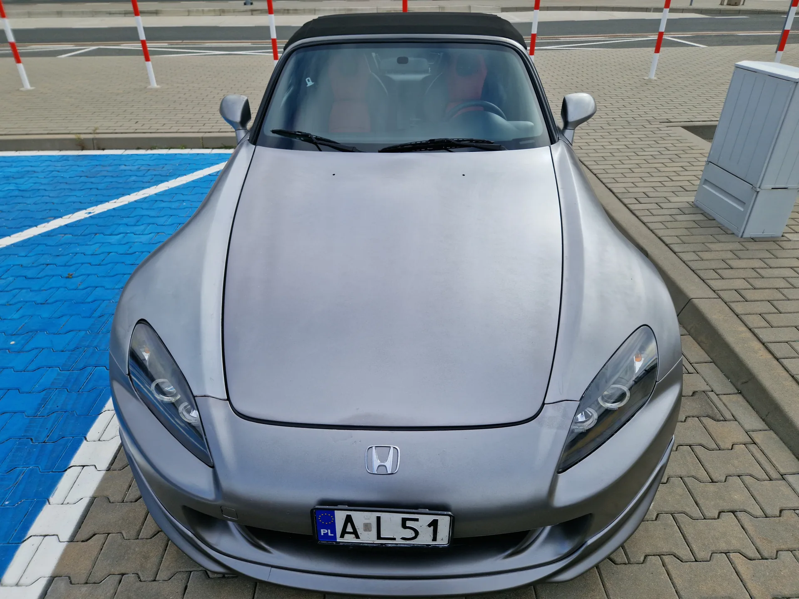
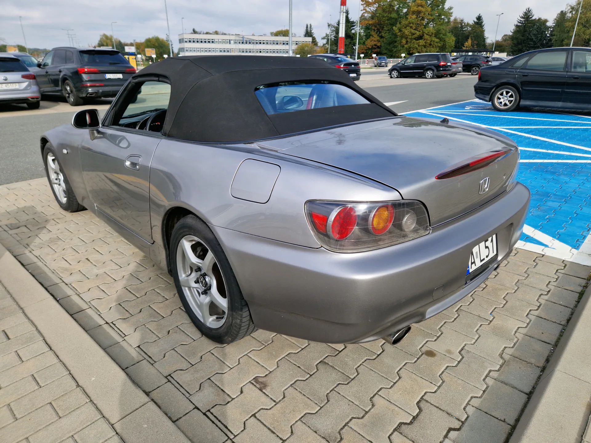

Silnik F22C / F22C1

Samochód na sprzedażMade for the drive / 1999–2009
S2000
Ostatni analogowy romans.
Dwa fotele. Sześć biegów. Napęd na tył. Wolnossący VTEC, który każe szukać kolejnego zakrętu. Honda S2000 AP2 2.2 z USA — konkretny egzemplarz, prawdziwe zdjęcia i uczciwe informacje o stanie.
01 / Naturalnie aspirujący silnik02 / Tylna oś napędowa03 / Stan bez upiększeń
Zanim zaczniemy historię
To nie jest
To nie jest
render.
To prawdziwa S2000, z prawdziwą historią — również tą mniej fotogeniczną.
Na zdjęciach widzisz srebrne nadwozie i czerwono-czarne wnętrze. Według przekazanych informacji samochód przyjechał z Kalifornii z niebieską folią, a jej usuwanie uszkodziło miejscami warstwę bezbarwną i bazową lakieru. Auto wymaga prac lakierniczych. Nie zamiatamy tego pod dywan.
Cała prawda o stanie ↗Nie da się tego zastąpić turboMechaniczna
Mechaniczna
poezja.
S2000 powstała z myślą o prowadzeniu, nie o liście wyposażenia. Klasyczna architektura, precyzyjny manual i obroty, które dziś wydają się wyjęte z innej epoki.
Moc katalogowa AP2 USA*
Czerwona strefa AP2
Założenie rozkładu masy
* W zależności od rocznika i standardu pomiarowego SAE: w publikacjach występuje 240 lub 237 hp. Dane dotyczą wersji modelowej AP2 z USA, nie wyniku pomiaru tego egzemplarza. Źródła: Honda, Car and Driver, Hagerty.
VTEC
Bez turbiny.
Bez filtra emocji.
Wolnossąca rzędowa czwórka 2,2 l rozwija moc wysoko, ale dzięki wydłużonemu skokowi tłoka daje wyraźnie więcej momentu w średnim zakresie niż wcześniejsze 2,0 l.
6MT
Sześć decyzji.
Twoja ręka.
Krótki skok lewarka i mechaniczna skrzynia sześciobiegowa stały się jednym z najbardziej rozpoznawalnych elementów doświadczenia S2000.
FR
Silnik z przodu.
Napęd z tyłu.
Jednostka cofnięta za przednią oś, układ FR i fabryczny mechanizm różnicowy o ograniczonym poślizgu tworzą samochód reagujący na kierowcę.
✳
Sztywność
bez dachu.
Konstrukcja High X-Bone wykorzystuje środkowy tunel i podłużnice do usztywnienia otwartego nadwozia — pomysł opisany przez Hondę już w 1999 roku.
↗
Dwa wahacze.
Cztery koła.
Niezależne zawieszenie na podwójnych wahaczach z przodu i z tyłu oraz 17-calowe koła w amerykańskim AP2 dają precyzję i bezpośredni charakter.
’99
Nie ma
następcy.
S2000 zadebiutowała w 1999 roku, kiedy Honda świętowała 50-lecie. Produkcję zakończono w czerwcu 2009; bez bezpośredniego następcy.
Wysokoobrotowa osobowość
Tam, gdzie
Tam, gdzie
inni kończą.
W amerykańskiej wersji AP2 silnik 2,2 l osiąga maksymalną moc w okolicach 7800 obr./min. Czerwona strefa zaczyna się od około 8000 obr./min — to nie 9000 obr./min charakterystyczne dla wcześniejszego F20C w AP1.
Różnica między AP1 a AP2 to nie tylko skok tłoka. Honda dopracowała elastyczność, stabilność zawieszenia i codzienną użyteczność bez porzucania pierwotnego pomysłu na samochód.
INTERAKTYWNA WIZUALIZACJA OBROTOMIERZA. Przesuń suwak lub uruchom demonstrację. To schemat działania, nie nagranie i nie pomiar oferowanego auta.
ENGINE SPEED / RPM
LOW REVAP2 REDLINE ≈ 8 000 RPM

Born in Japan. Built to drive.
Historia, która ma znaczenieHonda
Honda
zrobiła to
po swojemu.
Rodowód S2000 biegnie przez koncepcyjny SSM z 1995 roku i prototyp z 1998 roku aż do seryjnego roadstera z 1999 roku. To powrót Hondy do sportowego auta z silnikiem z przodu i napędem tylnym, po dekadach rozwijania innych koncepcji.
„Mniej izolacji. Więcej drogi.”Hasło redakcyjne tej strony, nie cytat producenta.
Europejskie wersje długo korzystały z silnika 2,0, ale od modelu 2004 S2000 dla USA otrzymała F22C1 o pojemności 2157 cm³. Różnice rynkowe są ważne — właśnie dlatego nie należy mieszać danych AP1 i AP2.
Według Hondy do końca 2008 roku sprzedano globalnie 110 673 egzemplarze. Liczba dotyczy całej gamy, a nie rzadkości tego konkretnego auta.
1995
Koncept SSM pokazany na salonie w Tokio.
1998
Honda prezentuje prototyp S2000.
1999
Debiut seryjnego S2000, rocznica 50-lecia marki.
2004
Amerykańskie AP2 z silnikiem 2.2 F22C1 i zmianami podwozia.
2009
Koniec produkcji — czerwiec 2009.
Pod powierzchniąZbudowana
Zbudowana
na zakręty.
S2000 nie potrzebowała wielkiego V8, by stać się ikoną. Zadziałało połączenie konstrukcji nadwozia, umieszczenia silnika, układu jezdnego i precyzyjnej skrzyni. Oto dwie inżynierskie ciekawostki.
High X-Bone
Wysoki centralny tunel łączy się ze strukturą przednią i tylną. Rozwiązanie zwiększa sztywność roadstera bez sztywnego dachu.
Schemat ideowy — nie jest rysunkiem fabrycznym.Motor cofnięty
za przednią oś
Takie rozmieszczenie masy sprzyja wyważeniu prowadzenia. Honda komunikowała dla S2000 idealny rozkład przód/tył 50:50.
Uproszczony schemat koncepcyjny, proporcje nie w skali.Transparentność zamiast sloganówLegenda.
Legenda.
Nie ideał.
Dobry samochód zasługuje na szczery opis. A dobry kupujący powinien wiedzieć, na co patrzy. Poniżej oddzielamy informacje przekazane o egzemplarzu od spraw, które trzeba sprawdzić przy oględzinach.
„Do malowania” to informacja, nie drobny przypis.
Kalifornia / USA
Według dotychczasowego opisu auto sprowadzono ze Stanów Zjednoczonych, z Kalifornii. Rok produkcji, VIN, dokumenty i historia importu nie zostały przekazane do publikacji.
Folia i lakier
Egzemplarz był wcześniej pokryty niebieską folią. Podczas usuwania starej okleiny miały odchodzić miejscami klar i baza. Zakres lakierowania wymaga oceny na żywo.
Srebrny / czerwony
Fotografie pokazują srebrne poszycie, czarny dach materiałowy i czerwono-czarną tapicerkę. Są także zdjęcia kokpitu i zestawu wskaźników; nie ma fotografii komory silnika.
Odczyt licznika
Na zdjęciu tablicy przyrządów widać odczyt 283 134. Nie określamy go jako aktualnego przebiegu ani nie przypisujemy jednostki bez dokumentów i potwierdzenia.
Stan mechaniczny
Brakuje danych o kompresji silnika, historii olejowej, skrzyni, dyferencjale, geometrii i dachu. Nie deklarujemy „bezwypadkowości”, „oryginalnego przebiegu” ani bezusterkowości.
Cena i kontakt
W archiwalnych wersjach znajdowały się testowe dane kontaktowe. Tutaj nie udajemy, że są prawdziwe. Numer, e-mail, cena, VIN i rok muszą zostać dopisane przez sprzedającego.
!
Ważne: zdjęcia są autentyczne i nie zostały podmienione na rendery. Opis lakieru pochodzi z wcześniejszej wersji ogłoszenia; fotografie nie zastępują dokładnego oglądu powłoki, podwozia i dokumentów. Zakres prac ustala kupujący po kontroli auta.
Bez retuszu. Bez fotoszopu.Zobacz
Zobacz
każdy detal.
10 rzeczywistych ujęć tego samochodu, wykonanych 18.10.2026. Kliknij, aby obejrzeć w pełnym rozmiarze. Strzałki ← → zmieniają fotografię.
Zdjęcia: oryginały dostarczone z ogłoszeniem. Bez generatywnego retuszu samochodu.Przesuń / kliknij / użyj klawiatury ↗
Nie musisz wierzyć sprzedawcyGłos mają
Głos mają
eksperci.
O charakterze S2000 napisano już tysiące słów. Wybraliśmy konkretne, sprawdzalne recenzje i opracowania. Poniższe streszczenia są redakcyjne — to nie wymyślone cytaty ani opinie o oferowanym egzemplarzu.
Car and Driver / Barry Winfield
2004: AP2 staje się bardziej kompletna.
Test zmodyfikowanej S2000 zwraca uwagę na zwiększenie pojemności do 2157 cm³, poprawę momentu, 17-calowe koła i dojrzalsze prowadzenie bez utraty wysokoobrotowego charakteru.
Przeczytaj test drogowy ↗
Hagerty / Alisdair Suttie
Klasyk, którego kupuje się głową i sercem.
Przewodnik zakupowy z 2024 roku opisuje urok wolnossącego VTEC, ale bez taryfy ulgowej wskazuje miejsca do sprawdzenia: dach, układ jezdny, rozrząd i historię obsługi.
Przeczytaj poradnik ↗
Car and Driver / James Tate
Dlaczego kierowcy wciąż jej szukają?
Przegląd rynku i wersji S2000 wyjaśnia różnice AP1/AP2 oraz to, dlaczego stan, dokumentacja i dobry przegląd przed zakupem mają większą wartość niż sama legenda modelu.
Przeczytaj analizę ↗
Opinie dziennikarzy odnoszą się do modelu Honda S2000, nie stanowią ekspertyzy tego konkretnego samochodu. Zewnętrzne teksty i filmy mają własnych autorów, a ich treść może być objęta prawami autorskimi.
Zobacz. Posłuchaj. Zrozum.S2000 w
S2000 w
ruchu.
Trzy rzeczywiste materiały z YouTube o Hondzie S2000. To filmy o modelu i jego odmianach — nie nagrania sprzedawanego pojazdu. Otwierają się w nowej karcie.
Dane, nie legendyTwarde
Twarde
liczby.
Dane referencyjne amerykańskiej Hondy S2000 AP2 z silnikiem F22C1. Różnice rocznikowe i rynkowe są oznaczone. Nie zastępują odczytu VIN ani dokumentacji sprzedawanego egzemplarza.
Źródło parametrów ↗- Model / konstrukcja
- Honda S2000 AP2, FR, 2 miejsca
- Silnik (USA)
- F22C1, R4, DOHC VTEC, wolnossący
- Pojemność
- 2157 cm³
- Moc katalogowa
- 240 hp SAE @ 7800 obr./min Model 2004; późniejsze pomiary SAE publikowano także jako 237 hp.
- Moment maksymalny
- 162 lb-ft ≈ 220 Nm @ 6500 obr./min Dane testowanej wersji 2004.
- Czerwona strefa
- około 8000 obr./min AP1 z F20C osiągała wyższą granicę — nie należy jej przenosić na AP2 2.2.
- Przekładnia / napęd
- Manualna 6-biegowa / RWD
- Mechanizm różnicowy
- O ograniczonym poślizgu (LSD)
- Zawieszenie
- Podwójne wahacze, przód i tył
- Koła AP2 USA
- 17 cali Fabryczny rozmiar dla wersji modelowej; zamontowane koła wymagają osobnej weryfikacji.
- Produkcja całej serii
- 1999–2009 Model z USA, dokładny rocznik egzemplarza jeszcze niepotwierdzony.
- Oferowany egzemplarz
- USA / srebrny na zdjęciach / wymaga prac lakierniczych
Zanim podejmiesz decyzjęPytania,
Pytania,
które warto
zadać.
Najczęstsze pytania o S2000 AP2 i ten egzemplarz. Nie mamy odpowiedzi na wszystko — właśnie dlatego warto to jasno rozdzielić.
Co oznacza AP2 i czym różni się od AP1?
AP1 to wcześniejsza odmiana S2000 z 2,0-litrowym F20C. Amerykańska AP2, wprowadzona na rok modelowy 2004, otrzymała F22C1 2,2 l, więcej momentu obrotowego przy niższych obrotach, 17-calowe koła oraz modyfikacje zawieszenia i wyglądu. Na różnych rynkach nazewnictwo i silniki nie zawsze pokrywały się w tych samych latach.
Dlaczego AP2 2.2 nie ma 9000 obr./min?
Jednostka F22C1 ma większy skok tłoka i czerwoną strefę około 8000 obr./min. Wysokie 9000 obr./min wiąże się przede wszystkim z wczesnym 2,0-litrowym F20C. To ważna różnica pomiędzy wersjami.
Dlaczego samochód wymaga malowania?
Według otrzymanego opisu na aucie znajdowała się stara niebieska folia. Przy jej demontażu odchodziły miejscami warstwy bezbarwna i bazowa lakieru. Skala naprawy powinna zostać ustalona przez lakiernika po dokładnych oględzinach; zdjęcia nie pozwalają wycenić całości.
Jaki jest przebieg oferowanego egzemplarza?
Na załączonej fotografii zestawu wskaźników widać 283 134. Nie podajemy tej wartości jako oficjalnego przebiegu, dopóki nie będzie potwierdzona aktualność odczytu, jednostka i dokumentacja pojazdu.
Czy samochód jest bezwypadkowy i mechanicznie sprawny?
Nie otrzymaliśmy danych pozwalających potwierdzić te twierdzenia. Przed zakupem należy sprawdzić VIN, raport historii, geometrię nadwozia, kompresję, skrzynię biegów, dyferencjał i stan poszycia dachu.
Na co szczególnie uważać przy zakupie S2000?
Eksperci Hagerty i Car and Driver zalecają kontrolę poziomu i historii wymian oleju, napinacza łańcucha rozrządu, zawieszenia i geometrii, synchronizatorów skrzyni, dachu materiałowego oraz dokumentacji napraw. To ogólna lista kontrolna dla modelu, nie lista wykrytych usterek tego auta.
Ile kosztuje samochód i jak umówić oględziny?
Ceny oraz prawdziwych danych kontaktowych nie przekazano w plikach źródłowych. Wcześniejsze strony zawierały fikcyjny adres z końcówką .example i przykładowy numer telefonu. Sprzedający powinien uzupełnić je przed publikacją ogłoszenia; nie podajemy zmyślonej ceny.
Dla kogoś, kto lubi prowadzićNastępny
Następny
zakręt
należy do ciebie.
Jeśli szukasz S2000 AP2 z silnikiem 2.2 VTEC i akceptujesz projekt wymagający prac lakierniczych, ten egzemplarz jest wart bliższego poznania. Najpierw poznaj fakty, potem podejmij decyzję.
Dane kontaktowe i cena: do uzupełnienia przez właściciela przed publikacją. W archiwum były wyłącznie dane testowe.